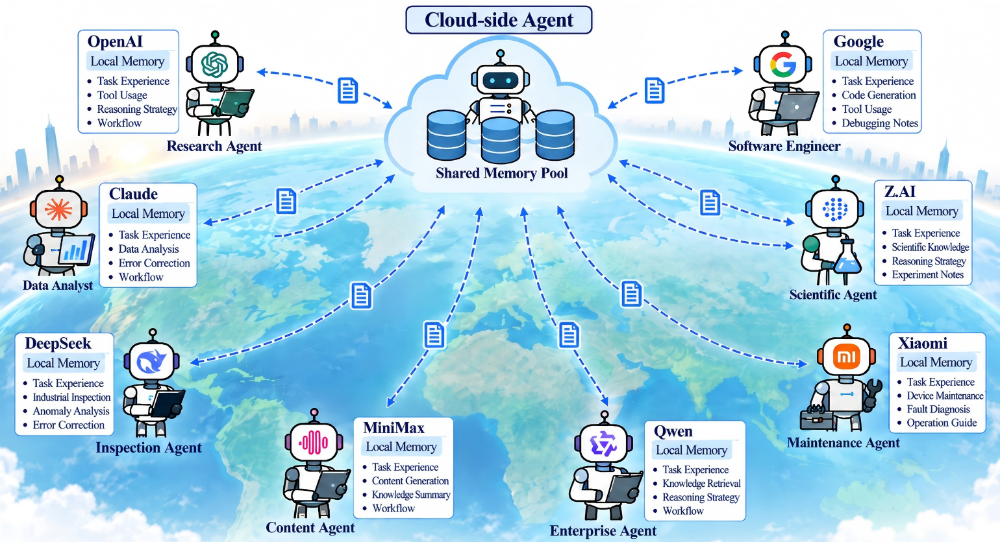

The research
Background & Abstract
Background
With the emergence of large language models (LLMs), LLM-based intelligent agents are increasingly employed for perception, reasoning, and decision-making tasks. However, a single agent remains limited when continuously encountering diverse tasks and local observations. Federated Agent Collaboration provides a distributed cooperation paradigm in which multiple agents exchange learned knowledge to improve local task performance (see Fig. 1). However, such collaboration inevitably incurs communication overhead. In real-world wireless environments with limited shared communication resources, this further calls for exchanging lightweight semantic knowledge to reduce communication burden while retaining collaborative benefits.

Abstract
In the LLM era, federated agent collaboration enables distributed agents to exchange valuable knowledge and improve local task performance. We extend Agentic Memory Evolution (AME) to the federated collaboration framework, giving rise to the federated AME paradigm. However, this direct extension remains insufficiently adapted, with limitations including: (1) memory exchange lacks explicit adaptation to practical wireless resource constraints; (2) the applicability of local memory to other agents' tasks is insufficiently considered; and (3) the semantic quality of exchanged memories is insufficiently considered.
To address these issues, we propose a joint agentic memory evolution and communication optimization framework, namely FedMEvo, for communication-resource-constrained wireless scenarios. Specifically, we first formulate federated AME under explicit wireless communication constraints. We then develop a task-aware co-optimization mechanism for on-demand agentic-memory exchange and wireless resource allocation. Moreover, we propose a multi-granularity memory representation strategy for the co-optimization, enabling joint consideration of semantic information and communication payload across varying representation sizes. Importantly, we provide a rigorous theoretical characterization of the proposed co-optimization, establishing its solution structure and convergence properties.
Extensive experiments show that FedMEvo achieves 40.8% higher average task performance than the strongest external baseline and 82.5% lower communication than the full-memory-upload variant. Further evaluations demonstrate robust performance–communication efficiency across diverse experimental settings. We further validate its practical applicability in a real-world industrial IoT scenario.